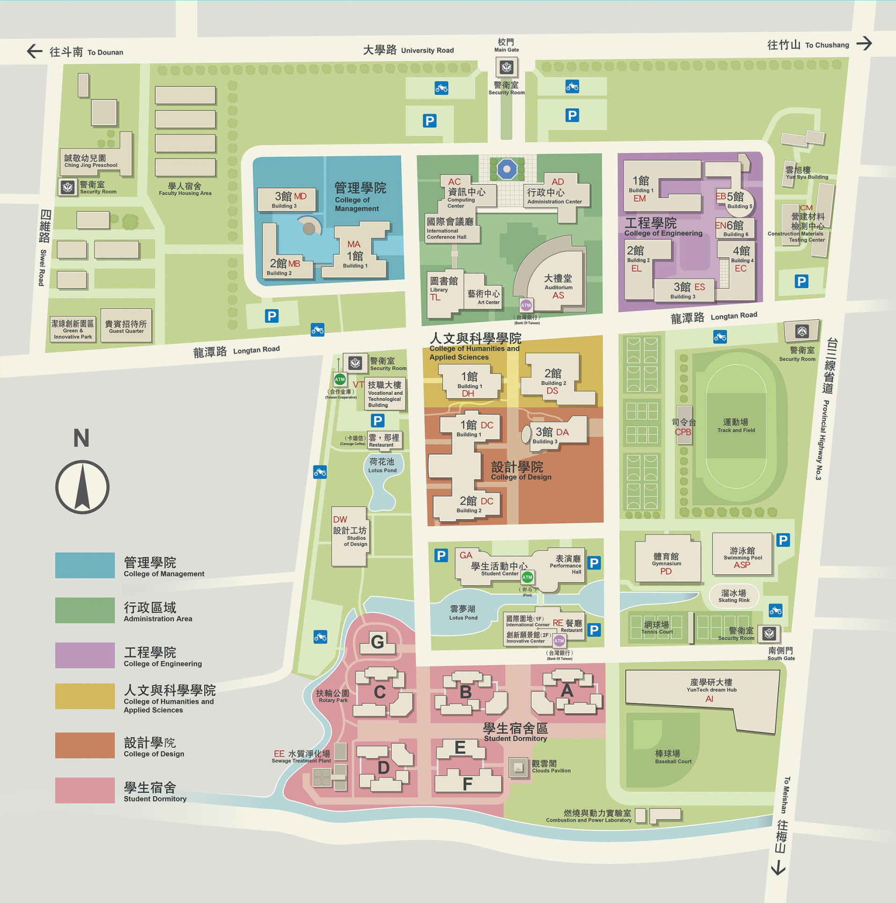

<!--1.如何拖曳圖片 或鍵盤控制方向	//感覺最難 //為甚麼要拖曳圖片?
	2.bootstrap JS modal用來做地圖的景點介紹出現  //還要做留言板(汗)
	3.為什麼youtube播放鍵會在左下角? 沒有看到哪裡有寫 他有時候會跑到上面去 //改圖片的位置即可 我沒設它的位置
	4.四個member按下沒有跳出modal 應該是JS有錯 不知道if($().click){}這樣寫對不對 //應該不能這麼寫 160行的也是 要另外立個flag
	求幫助-->

<!DOCTYPE html>  
<html>
<head>
	<title>title</title>
    <meta charset="utf-8" />
	<meta name="viewport" content="width=device-width, initial-scale=1.0">
	<!--bootstrap CDN-->
    <link rel="stylesheet" href="https://stackpath.bootstrapcdn.com/bootstrap/4.4.1/css/bootstrap.min.css" integrity="sha384-Vkoo8x4CGsO3+Hhxv8T/Q5PaXtkKtu6ug5TOeNV6gBiFeWPGFN9MuhOf23Q9Ifjh" crossorigin="anonymous">
	<script src="https://stackpath.bootstrapcdn.com/bootstrap/4.4.1/js/bootstrap.min.js" integrity="sha384-wfSDF2E50Y2D1uUdj0O3uMBJnjuUD4Ih7YwaYd1iqfktj0Uod8GCExl3Og8ifwB6" crossorigin="anonymous"></script>
	<script src="https://code.jquery.com/jquery-3.4.1.slim.min.js" integrity="sha384-J6qa4849blE2+poT4WnyKhv5vZF5SrPo0iEjwBvKU7imGFAV0wwj1yYfoRSJoZ+n" crossorigin="anonymous"></script>
	<script src="https://cdn.jsdelivr.net/npm/popper.js@1.16.0/dist/umd/popper.min.js" integrity="sha384-Q6E9RHvbIyZFJoft+2mJbHaEWldlvI9IOYy5n3zV9zzTtmI3UksdQRVvoxMfooAo" crossorigin="anonymous"></script>
    <script src="js/bootstrap.bundle.min.js"></script>
	<style>
		body{
			background-color:aliceblue;
		}
		#footer{
			color:aliceblue;
		}

		/*mini game 地圖*/
		#minga{
			left:"500px";
			top:"500px";
			width:"300px";
			height:"300px";
		}

		/*我們*/
		#member1{				
			width: 4%;
			height: 8%;
			margin:5% 4% 0px 0px;
			padding:1000px auto;
		}
		#member2{				
			width: 4%;
			height: 8%;
			margin:5% 4% 0px 0px;
			padding:1000px auto;
		}
		#member3{				
			width: 4%;
			height: 8%;
			margin:5% 4% 0px 0px;
			padding:1000px auto;
		}
		#member4{				
			width: 4%;
			height: 8%;
			margin:5% 4% 0px 0px;
			padding:1000px auto;
		}
		
	</style>

	<!--被呼叫的function-->
	<script>
		
		/*function mem1(){
			$(".modal-body").text("柏賢帶你走雲科 確定嗎");
			$("#memShowMap").innerhtml(
				''
			);
			$("#memShowMap").style({
				left: "500px",
				top:"0px"
			});
		}*/
	</script>
</head>

<body>		<!--按下時-->

<!-- youtube load-->
	<div>
		<div data-video="aHtWKbR_P-c" data-autoplay="0" data-loop="1" id="youtube-audio" style="width: 10px; margin: 2em auto; cursor: pointer; display: none;">
			
			<iframe id="youtube-player" frameborder="0" allowfullscreen="1" allow="accelerometer; autoplay; encrypted-media; gyroscope; picture-in-picture" title="YouTube video player" width="0" height="0" src="https://i.imgur.com/JC08Fu3QfJg.html"></iframe>
		</div>

		<!---->
		<script type="text/javascript" id="www-widgetapi-script" src="./js/www-widgetapi.js.&#19979;&#36617;" async=""></script>
		<script type="text/javascript" src="./js/iframe_api"></script>
		<script>
			
			//這裡以下都是模板function  嗎?
			var player;
			function onYouTubeIframeAPIReady() {
			
				var ctrlq = document.getElementById("youtube-audio");
				ctrlq.innerHTML = '<div id="youtube-player"></div>';
				ctrlq.style.cssText = 'width:1px;box-sizing: border-box; position: absolute;bottom: 80px;cursor:hand;display:none';
				ctrlq.onclick = toggleAudio;
			
				player = new YT.Player('youtube-player', {
					height: '0',
					width: '0',
					videoId: ctrlq.dataset.video,
					playerVars: {
						autoplay: ctrlq.dataset.autoplay,
						loop: ctrlq.dataset.loop,
					},
					events: {
						'onReady': onPlayerReady,
						'onStateChange': onPlayerStateChange 
					} 
				});
			} 
		
			function togglePlayButton(play) {    
				document.getElementById("youtube-icon").src = play ? "https://i.imgur.com/IDzX9gL.png" : "https://i.imgur.com/quyUPXN.png";
			}
		
			function toggleAudio() {
				if ( player.getPlayerState() == 1  ) {
					player.pauseVideo(); 
					document.getElementById("youtube-icon").src =  "https://i.imgur.com/quyUPXN.png";	
				} else {
					player.playVideo();
					document.getElementById("youtube-icon").src = "https://i.imgur.com/IDzX9gL.png";
				} 
			} 
		
			function onPlayerReady(event) {
				document.getElementById("youtube-audio").style.display = "block";
				togglePlayButton(player.getPlayerState() !== 5);	//!==要同類型才會比較 !=會先轉換類型再比較
			}
		
			function onPlayerStateChange(event) {
				if (event.data === 0) {				//===檢查是否相同类型相同值
					togglePlayButton(false); 
				}
			}

		</script>

		<div id="footer" style="margin:0px auto;width: 90%;height:100%;">
			<!--minigame 1.點選地圖人物 3.換黑地圖按鈕-->
			
			<br>
			<!--我們人物變button-->
			
			
			
			
			<!--data target #myModal 確認是否用此member-->
			<div class="modal" id="myModal1">  <!--這邊你之前打成id="myModal"不能跑:P-->
				<div class="modal-dialog">
					<div class="modal-content">
						<!-- Modal body -->
						<div class="modal-body" id="modal_body">
							<script>
								if($("#member1").click){     
									document.getElementById("modal_body").innerHTML="柏賢帶你走雲科 確定ㄇ"; //好像不能用this.innerHTML
								}
								else if($("#member2").click){
									document.getElementById("modal_body").innerHTML="宛君帶你走雲科 確定ㄇ";
								}
								else if($("#member3").click){
									document.getElementById("modal_body").innerHTML="冠佑帶你走雲科 確定ㄇ";
								}
								else if($("#member4").click){
									document.getElementById("modal_body").innerHTML="疫情帶你走雲科 確定ㄇ";
								}
							</script>
						</div>
						<!-- Modal footer -->
						<div class="modal-footer" type=button>
							<button type="button" class="btn btn-success" data-target="#memShowMap">YES</button>
							<button type="button" class="btn btn-danger" data-dismiss="modal">NO</button>
						</div>
					</div>
				</div>
			</div>
			
			<!--確認用此member後 此member出現在地圖上(memShowMap)校門口-->
			<div>
				<div id="memShowMap">
					<script>
						if($("#member1").click){document.getElementById("memShowMap").innerhtml('');}
						else if($("#member2").click){document.getElementById("memShowMap").innerhtml('');}
						else if($("#member3").click){document.getElementById("memShowMap").innerhtml('');}
						else if($("#member4").click){document.getElementById("memShowMap").innerhtml('');}
					</script>
				</div>
			</div>
		</div>
	</div>


</body>
</html>